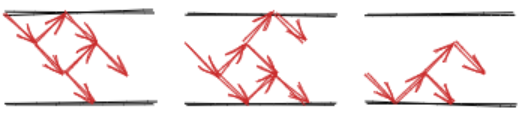

AGC045 赛后总结
打得一坨屎。
比赛链接：https://atcoder.jp/contests/agc045
A. Xor Battle
题目链接：https://atcoder.jp/contests/agc045/tasks/agc045_a
题目大意：第 $i$ 轮第 $S_{i}$ 个人行动 ：将 $x$ 异或 $A_{i}$ 或者不操作，$x$ 初始为 $0$ ，如果最后 $x=0$ 则 $0$ 赢，否则 $1$ 赢，问最后谁必赢。
做法
显然，先手必胜的条件是从后往前，每个 $1$ 的 $A_{i}$ 可以被其后面 $0$ 的 $A_{i}$ 表示。
写个线性基就行了。
时间复杂度：$O(n\log{V})$
1 |
|
没开 long long WA 了一发，真唐氏儿吧。
和题解一致。
B. 01 Unbalanced
题目链接：https://atcoder.jp/contests/agc045/tasks/agc045_b
题目大意：给 $?$ 填 $01$ ，使得任意区间中 $01$ 个数差值绝对值的最大值最小。
做法
显然，可以把 $0$ 看成 $-1$ ，$1$ 看成 $1$ ，然后就是求前缀和最大值减最小值的最小可能值。
做法很简单，就是对于当前字符串，维护未来可能成为答案的值域范围，即指在所有可能的值域范围中，不存在一个范围是这个范围的真子集的范围。
注意到 $0$ 的转移就是所有区域向下移动，同时如果上界 $<0$ 就补成 $0$ ，显然已经丢掉的区间不需要考虑，只考虑现在有的区间，其余转移类似，于是这样能发现结果只有两种情况：
- 相同长度的区间，可以右移有限步，例如：$[-2,0],[-1,1],[0,2]$ 这样的。
相同长度的区间，可以右移有限的两步，即每次移动都是移动两步，同时左边和右边可能还有长度 $+1$ 的区间，但是相对位置是固定的，设基准区间为 $[l,r]$：
$([l-2,r-1],)[l,r],[l+2,r+2],…,l+2k,r+2k$
理论上这个时候只需要讨论就行了。
但是我觉得讨论太麻烦了，发现你只关心左右两个区间，至多四个区间，就可以维护当前的状态。
但是需要注意，转移的时候如果总区间数 $>4$ ，那么需要往内补至多两个区间（左右各一个），防止左右端点失效个数减少。
转移的时候就拿不超过 $6$ 个区间转移出他们的后继区间，然后去重，保留没有真子集的区间，按左端点为第一关键字，右端点为第二关键字排序，然后选最小的两个和最大的两个就行了，可以发现仍然是上面两种情况的合法维护，然后就行了。
证明正确也不难，可以发现只拿左右 $6$ 个区间转移，显然下一步的 $4$ 个区间是能转移出来的，其次的区间如果是下一步的其余合法区间，不会干扰最后选择，如果不是，又没被 $4$ 个区间去掉，说明被中间区间去掉了，研究此时这个区间的位置，左端点大于第二个区间，右端点小于第三个区间，所以也不会干扰最后选择，综上，这个转移是正确的，上面的表述可能不够严谨，但反正按照这个思路我觉得能证，应该大差不差了，懒得细想了。
时间复杂度：$O(n)$ 。
1 |
|
很早的意识到这道题目前缀和的性质。 在最开始的时候，考虑每一段不是 $?$ 的区间，发现研究值域很有效，感觉需要讨论。 再后来，发现可能需要维护一系列可能的值域区间，而且这些区间的长度还不一定相等，猜想所需要维护的区间一定满足某种性质。 但是因为是一段一段字符考虑，不是一个个字符考虑，猜到了结论，但是不会证明，更不会讨论和转移，卡了一个小时。 最后意识到可以是一个个字符转移，遂会做，想到维护四个区间的做法，很快 AC 。（可能也不快） 首先，深刻反思： 再其次，应该意识到，如果考虑区间不行，就考虑单个字符，这是有理有据的，虽然确实也有很多题目是应该考虑区间的，但是卡题的时候，换个思路思考是十分合理的，重点不是可能不可能成为答案，而是我没有尝试过这么思考，这很危险（虽然最后还是想到了，但是卡了一个小时基本完蛋了）。 而且本身也有很多题目，是从考虑区间变成考虑单个数字的时候，就豁然开朗了，所以这是一个合理的方向。 再其次，这道题目考虑单个字符是有迹可循的，区间本质上是一堆字符中间加了 $0$ 个操作，而一堆 $?$ 是中间有 $0$ 长度的区间，而一般的算法，尤其是 $dp$ ，一般能处理 $>0$ 的情况就能处理 $=0$ 的情况，所以就应该把区间拆成单个字符，一堆问号拆成单个问号想想的。 总之，赛时因为没想到考虑单个字符，一直卡在考虑区间，我认为是犯大罪，是不应该犯的错误，警钟敲烂。犯罪记录
看了题解，越来越感觉自己很唐了。
别的做法 1
我们考虑固定一个上界，求最大的下界，注意到肯定是把所有的 $?$ 填成 $0$ ，然后从左到右，维护后缀最小值，能填 $1$ 填 $1$ 。
正确的道理就是：修改相当于后缀 $+2$ ，考虑原来的每个后缀最大值，实际上限制了前面至多有多少个修改，显然在不超过限制的情况下，修改越往前，全局最小值越小。
考虑把上界 $+2$ ，显然至多导致多修改一个 $1$ ，所以答案不优，所以求最小的上界和最小的上界 $+1$ 就行了，最小上界就是全填 $0$ 的最大值。
时间复杂度：$O(n)$ 。
首先，我有想过这个固定上界的思路，但是为什么没想出来怎么求出最大下界了？ 因为有个唐氏儿一开始没有把所有的问号写成 $0$ ，首先，问一个位置变成 $±1$ 还是原本是 $0$ ，是否修改成 $1$ ，虽然都是两个选择，但是在贪心和 dp 中，后者的思考难度和维护难度一般都远小于前者，因为将两个操作变成不操作和操作两个选择是一个很优秀的变化，做多了就知道了。 但是某个唐氏儿都大一了，打了八年以上，还能忘记这一点，全程带着 $0$ 来想，好想中途有想过先全部填成 $0$ 或者 $1$ ，但是当时还在想维护区间那个思路，发现这个思路没用，想了一会就没想了，结果痛失良机，真是唐吧。想怎么求最大下界想了不下几十分钟，怎么就是没想到先把 $?$ 填成 $0$ 或者 $1$ 呢？ 当然，后面那个上界那一步我不一定能想出来，但我恨就恨在我怎么菜到第一步都没想出来，而且还不是方向错了那种，是方向对了，但就是没想出来。 真是菜啊。 一开始全填 $1$ 也能做，就是每个后缀必须要变多少个 $0$ ，差分一下看是否能满足要求就行，在此基础上，$0$ 越靠后，全局最小值越大。反思
这好像就是官方做法。
我真是菜啊，我真是废物啊。
别的做法 2
https://www.luogu.com.cn/article/na9yv0ep
一个很有意思的做法，赏心悦目。
二分值域范围，这样就只需要 check ，但是一开始不知道区间落在哪里，一个很有意思的搞法是一开始就把起点尝试放在区间中的每个位置（我记得我以前好想也见过这个 trick ，但是现在已经忘了），即同时维护长度个路径，然后每次转移的时候，注意到可以到达的范围是个区间，然后就做完了，时间复杂度：$O(n\log{n})$ 。
这里放一张图，来自上面那篇博客的。

很有意思的做法，看这种做法真是让人感到愉悦啊。虽然时间复杂度劣于正解就是了